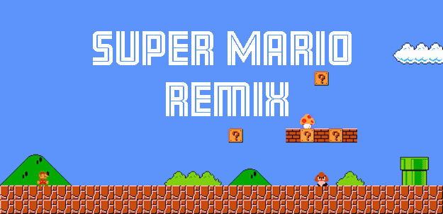

<!-- Page Content -->
<div class="container">
<!--<h2 class="header">{{header}}</h2>-->


<div class="row">

    <!-- Blog Post Content Column -->
    <div class="col-lg-12">

        <!-- Blog Post -->

        <!-- Title -->
        <br>
        <h1>{{header}}</h1>

        <!-- Author -->
        <p class="lead">
            Juniors/Seniors: MMAIII 2016-2017
        </p>

        <hr>

        <!-- Date/Time -->
        <h5><span class="glyphicon glyphicon-time"></span> Updated on March 15, 2017</h5>

        <hr>

        <!-- Preview Image -->
        <div class="row">
            
        </div>

        <hr>

        <!-- Post Content -->
        <p class="lead">This project was the 2nd part of 3 phase project involving introducing Programming and Multimedia through Game Design in the <a target="_blank_" href="https://unity3d.com/">Unity Game Engine</a>. Students studied the first level of Super Mario Brothers, and then recreated it using Unity and C#. Students had to create their own sprites, upload them to Unity, write the scripts and make the game function. They followed a set of tutorials I made for them to get them to the point where they have a replication of the first level. The real project starts when they changed on mechanic of the game, and remixed the level around it….</p>
        
        <p>This project came from an idea developed by the students. We needed to work together as a class to create the same game to learn the basics before branching out into making individual ones, so we came up with the idea of recreating the first level of Super Mario Brothers, and then changing to make it our own. We were studying complex systems and how game mechanics influence the psychology of the player, and used this to modify the game play style of Super Mario Brothers. For every change that was made to a mechanic, the world also needed to change to accommodate it. If the student decided to let Mario fly, then they needed to modify the level to provide a challenge to the player.</p>

        <p>Ultimately, this project took a little too long. We ran short on time in the end and were unable to fully implement the remix. We ran into a hard deadline at the end of January, when the Seniors all left on their month long Internships, so we needed to wrap up the project before hand. However, the goal was really to learn more about Unity and the Game Development process, which was a success. </p>

        <p>Students then will take what they learned here into the final phase of this project, which is to break off into teams to develop their own original games.</p>
     
    </div>


</div>
<!-- /.row -->


     